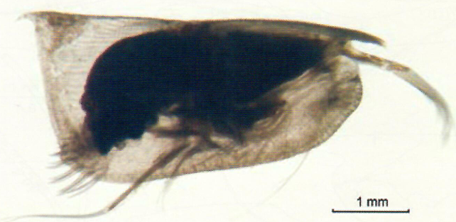
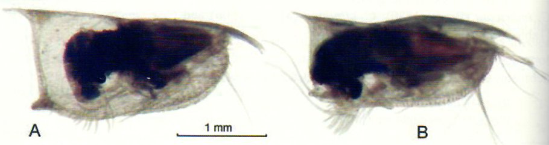
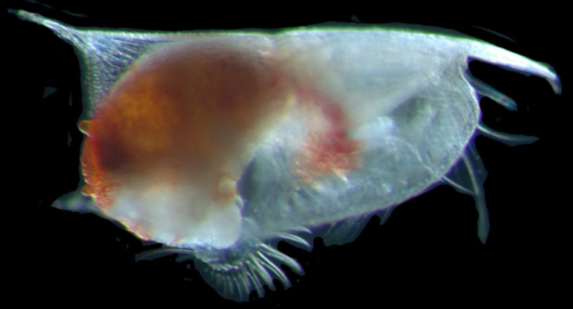
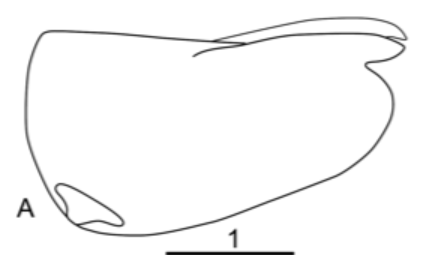

3

- Carapace wedged and angled to ~80 degrees
- Shoulder vault present
Female: 2.80 - 3.12 mm (H/L: 40.8)
Male: 2.80 - 3.00 mm (H/L: 44.0)
(Fig. 1b, 2b)
Conchoecetta giesbrechti
|
- Carapace is elongated or "wedge-like" (Fig. 1a, 1b, 2a, 1j, 2b, 9a) 2  |
- Carapace is NOT elongated or "wedge-like" (instead rounded, "box-like") (Fig. 1c, 1g, 1h, 1k, 1l, 1m) 5 |
|
- Top posterior corner of carapace ends in sharp point like a spine (Fig. 9a, 9b, 1a, 2a, 10a) 3
|
- Top posterior corner of carpace does NOT end in sharp point like a spine (Fig. 1b, 2b) - Carapace wedged and angled to ~80 degrees - Shoulder vault present Female: 2.80 - 3.12 mm (H/L: 40.8) Male: 2.80 - 3.00 mm (H/L: 44.0) (Fig. 1b, 2b) Conchoecetta giesbrechti |
|
- Carapace sharply elongated and angled to a point - Females have long and pointed rostrum Female: 4.64 - 5.16 mm (H/L: 20.4) Male: 2.80 - 3.00 mm (H/L: 28.1) (Fig. 1a, 2a, 2c) Conchoecilla daphnoides |
- Carapace is more wedged and is highly ornamented (Fig. 10a, 9a, 10b, 10c) 4

|
|
- Bottom posterior corner of carapace has a clear conical protrusion - Rostrum is curved and longer than Conchoecissa plinthina - *live specimens lightly pigmented Female: 2.84 - 2.88mm (H/L: 42.9) Male: 2.55 - 2.64mm (H/L: 39.6) (Fig. 9a, 10c, 10d 10e) Conchoecissa imbricata  |
- Bottom posterior corner of carapace does NOT have a clear conical protrusion - Rostrum is shorter than Conchoecissa imbricata - *live specimens strongly pigmented Female: 4.92 - 5.83mm (H/L: 46.4) Male: 4.67 - 5.50mm (H/L: 46.2) (Fig. 1j, 10a, 10b) Conchoecissa plinthina
|
|
- Below mid-line of the carapace is rounded, circular, or "swollen" (Fig. 1g, 3a, 3b, 6a, 6b) 6 |
- Below mid-line of the carapace is NOT rounded, circular, or "swollen" (instead flat, tapered) (Fig. 1c, 1l, 5a, 1h, 5g) 7 |
|
- Carapace has unique proturbances (e.g., bumps or horns) (Fig. 3b, 7a, 7b, 9c, 9d) 14 |
- Carpace does NOT have unique proturbances (Fig. 3a, 6b, 11a, 11c) 15 |
|
- Top posterior corner of carapace ends in sharp point like a spine (Fig. 5b, 1e, 1m, 5f, 5h) 8 
|
- Top posterior corner of carapace does NOT end in sharp point like a spine (Fig. 1c, 5a, 5d, 5e, 5i) 13  |
|
- Carapace highly ornamented or striated (Fig. 5f, 12a, 12b, 12c) 12
|
- Carapace NOT highly ornamented or striated (Fig. 5b, 5h, 12d) 9 |
|
- Carapace has strong, well-developed shoulder vaults (Fig. 5b, 13a, 13b) 10 |
- Carapace does NOT have strong, well-developed shoulder vaults 11 |
|
- Carapace has prominent, rounded shoulder vault - Few striae on the anteriorventral portion of carapace Female: 1.86 - 2.32mm (H/L: --) Male: 1.66 - 1.96mm (H/L: --) (Fig. 13a) Paraconchoecia spinifera |
- Carapace has shoulder vaults with broad wing-like extensions pointing posteriorly - Posterior is straight and almost right-angled Female: 2.05 - 2.43mm (H/L: 46.2) Male: 1.88 - 2.13mm (H/L: 55.0) (Fig. 13b, 13c, 13d, 13e) Alacia alata |
|
Lead 1. Endpoint 1. |
Lead 2. Endpoint 2. |
|
- Whole carapace is ornamented - Long, straight rostrum Female: 2.19 - 2.60mm (H/L: --) Male: 2.42 - 2.79mm (H/L: --) (Fig. 5f) Archiconchoecissa cucullata
|
- Whole carapace is lightly striated (parallel lines) SMALL FORM Female: 1.82 - 2.08mm (H/L: --) Male: 1.72 - 1.78mm (H/L: --) LARGE FORM Female: 3.24 - 3.76mm (H/L: --) Male: 2.66 - 2.96mm (H/L: 46.6) (Fig. 12a, 12b, 12c) Orthoconchoecia striola |
|
Lead 1. Endpoint 1. |
Lead 2. Endpoint 2. |
|
- Carapace has distinct round bumps on the side - Size is much smaller than Fellia cornuta - Carapace has well-developed shoulder vaults and concentric ornamentation Female: 1.80 - 2.24mm (H/L: --) Male: 1.70 - 1.94mm (H/L: --) (Fig. 3b, 7a, 7b) Fellia bicornis |
- Carapace does NOT have distinct round bumps on the side - Size is much larger than Fellia bicornis - Carapace has slight shoulder vaults Female: 3.24 - 3.60mm (H/L: 80.0) Male: 3.16 - 3.48mm (H/L: --) (Fig. 9c, 9d) Fellia cornuta |
|
- Carapace has well-developed, elongated rostrum - Female rostrum strongly pointed down Female: 0.94 - 1.04mm (H/L: 69.0) Male: 1.07 - 1.13mm (H/L: 58.3) (Fig. 6a, 11a, 11b, 11c, 11d) Mikroconchoecia stigmatica |
- Carapace has small or lack of rostrum (Fig. 3a, 6b, 1k, 11e, 11f) 16 |
|
- Carapace is characteristic and coffee bean shaped - Unmistakable features (e.g., chocolate brown color, compound eye, long setae) Female: 5.92 - 7.33mm (H/L: --) Male: 6.00 - 7.33mm (H/L: --) (Fig. 6b, 6c, 6d) Macrocypridina castanea rotunda |
- Continue to other species with small or underdeveloped rostrum (Fig. 8a, 8b, 8c) 17 |
|
- Carapace has very small rostrum - Medioventral clear "lens-like" structure - Numerous small glands lining the anterior, ventral, and posterior of carapace - Concentric striae on carapace Female: 0.57 - 0.58mm (H/L: 60-62) Male: 0.60 - 0.62mm (H/L: 56.0) (Fig. 8a, 8b) Archiconchoecia instriata |
- Carapace has underdeveloped rostrum (Fig. 11f, 4d 8c) 18 |
|
- Carapace is globose - Main distinguishing factor is the size is much larger than Halocypris pelagica Female: 1.4 - 1.8mm (H/L: --) Male: 1.36 - 1.57mm (H/L: --) (Fig. 8c, 8d, 8e, 11f) Halocypris inflata |
- Carapace is globose - Main distinguishing factor is the size is much smaller than Halocypris inflata Female: 1.16 - 1.40mm (H/L: 81.0) Male: 1.05 - 1.42mm (H/L: 69.0) (Fig. 4a, 4b, 4c. 4d) Halocypris pelagica |